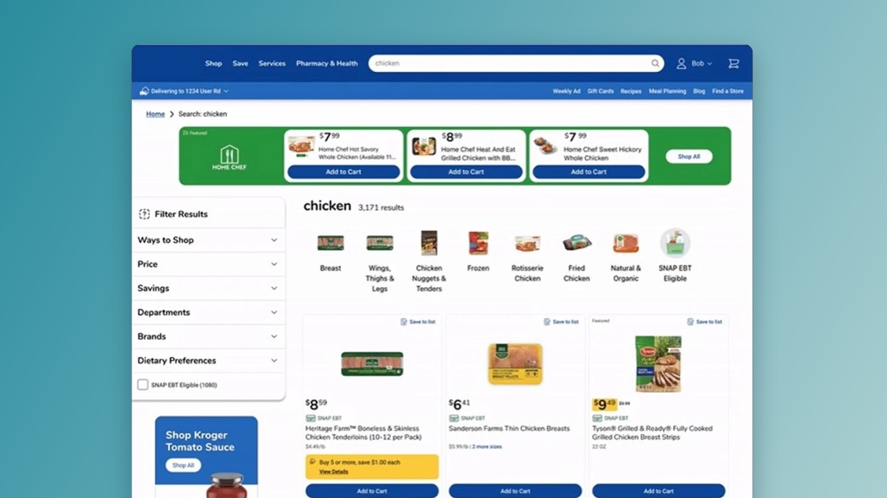
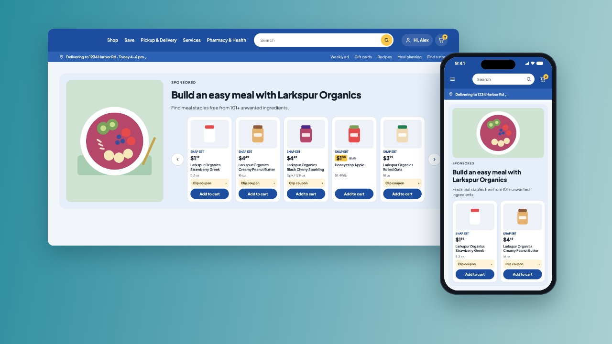
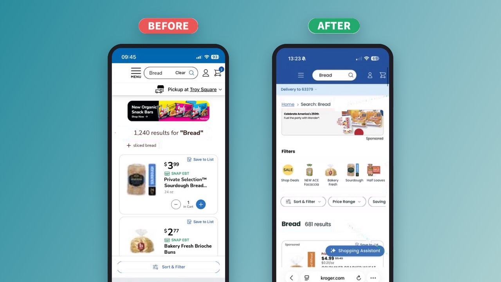

Onsite Ad Innovation Research
Prototyped new ad types and tested them with shoppers and brands to learn what to build next, and how and where.
Impact✦ Uncovered the next big opportunity: sponsored carousels
Read case study
Senior Product Designer
10+ years in design, 5+ embedded in Kroger's product org, designing search and monetisation experiences for tens of millions of customers. Open to senior roles, remote from Spain, with UK, EU or US teams. Happy to travel.
What I bring
I plan and facilitate discovery sessions to frame problems and uncover opportunities.
I write research plans and run unmoderated usability tests, and support research teams with moderated ones.
I lead workshops and meetings, keeping teams and stakeholders aligned.
I plan design roadmaps, size the work for each quarter and break it into sprints.
From quick wireframes to high-fidelity prototypes, covering every flow and edge case.
I integrate AI as a tool across the design process, from research to ideation and design, to work more effectively. Certified in AI for UX Design.
Selected work
A selection of my most relevant work. More on the Work page.

Prototyped new ad types and tested them with shoppers and brands to learn what to build next, and how and where.

Designed sponsored carousels and a video ad format end to end, across web, iOS and Android.

Redesigned search filters, backed by moderated and unmoderated research.
About
I start with research, prototype early and test with real users: moderated and unmoderated usability studies, A/B tests and accessibility reviews. I work side by side with PMs and engineers, from the first requirements to launch, and keep stakeholders aligned along the way.
More about me